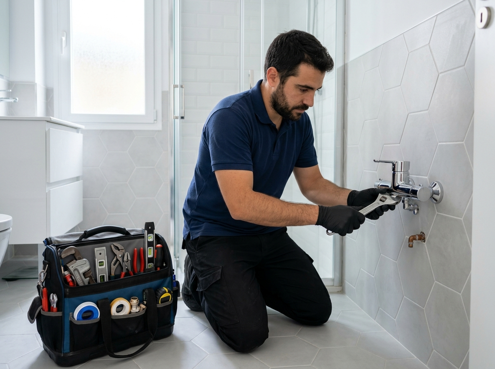

Localización y Reparación de Fugas de Agua
Intervención rápida ante roturas de tuberías empotradas o vistas, falsos techos, montantes comunitarias, latiguillos reventados y humedades activas.
- Corte y contención inmediata del escape de agua
- Tuberías de cobre, multicapa, PPR termofusión y polietileno
- Collarines de toma, manguitos y codos de alta presión
- Informes claros y fotos para seguros del hogar